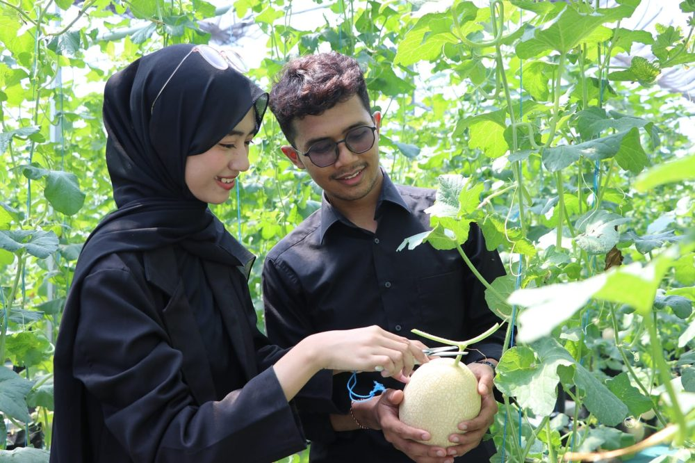
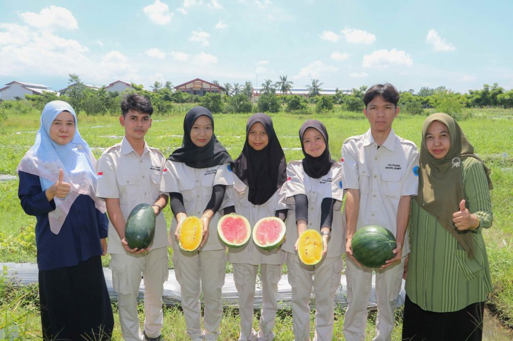
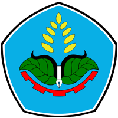

Ruang hijau pembelajaran vokasi, budidaya hortikultura, dan agrowisata edukasi di lingkungan kampus Politeknik Negeri Jember.
Potret kebun





Ruang hijau pembelajaran vokasi, budidaya hortikultura, dan agrowisata edukasi di lingkungan kampus Politeknik Negeri Jember.

